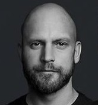

Coach & Mitgründer
Ich weiß, wovon ich spreche – weil ich selbst dort war.

Coach & Mitgründer
RESET Coaching
[BITTE ERGÄNZEN] Persönliche Geschichte von Mark – wie er selbst in einer toxischen Beziehung mit einer Borderline-betroffenen Frau war, was das mit ihm gemacht hat, wie er rausgefunden hat. Persönlich, ehrlich, authentisch. Ca. 3–5 Absätze.
[BITTE ERGÄNZEN] Schildere den Alltag damals: Was waren die Muster? Wie hat sich die Beziehung angefühlt? Welche Gefühle haben dich dominiert?
[BITTE ERGÄNZEN] Wie tief war der Tiefpunkt? Was hat dich dazu gebracht, etwas zu verändern?
[BITTE ERGÄNZEN] Wende für Mark: Was hat die Veränderung gebracht? Welcher Moment war entscheidend? Was war der erste Schritt zurück zu dir selbst?
[BITTE ERGÄNZEN] Was hast du in dieser Phase gelernt, das du heute an andere Männer weitergibst?
[BITTE ERGÄNZEN] Warum Coaching? Was hat Mark dazu bewogen, andere Männer zu begleiten? Was gibt er weiter? Warum ist es ihm wichtig, genau das zu tun?
Stimmen
Das Erstgespräch ist kostenlos und unverbindlich. Wir hören zu – ohne Druck.
Jetzt Erstgespräch vereinbaren